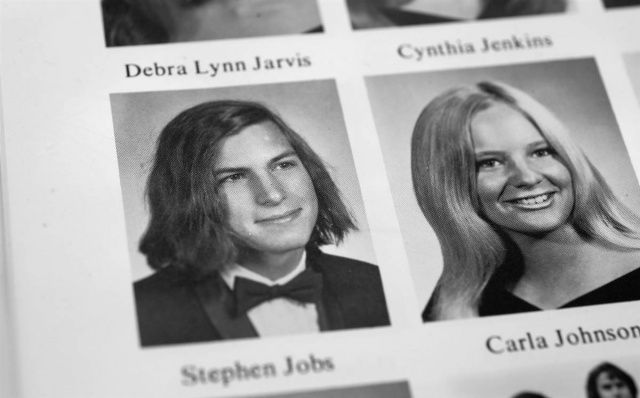

Paul and Clara adopted Jobs's sister Patricia in 1957 and the family moved to Mountain View, California, in 1961. It was during this time that Paul built a workbench in his garage for his son in order to "pass along his love of mechanics." Jobs, meanwhile, admired his father's craftsmanship "because he knew how to build anything. If we needed a cabinet, he would build it. When he built our fence, he gave me a hammer so I could work with him ... I wasn't that into fixing cars ... but I was eager to hang out with my dad." By the time he was ten, Jobs was deeply involved in electronics and befriended many of the engineers who lived in the neighborhood. He had difficulty making friends with children his own age, however, and was seen by his classmates as a "loner.
Jobs had difficulty functioning in a traditional classroom, tended to resist authority figures, frequently misbehaved and was suspended a few times. Clara had taught him to read as a toddler, and Jobs stated that he was "pretty bored in school and [had] turned into a little terror... you should have seen us in the third grade, we basically destroyed the teacher." He frequently played pranks on others at Monta Loma Elementary school in Mountain View. His father Paul (who was abused as a child) never reprimanded him, however, and instead blamed the school for not placing enough challenge on his brilliant son.
Jobs would later credit his fourth grade teacher, Imogene 'Teddy' Hill, with turning him around: "She taught an advanced fourth grade class and it took her about a month to get hip to my situation. She bribed me into learning. She would say, 'I really want you to finish this workbook. I'll give you five bucks if you finish it.' That really kindled a passion in me for learning things! I learned more that year than I think I learned in any other year in school. They wanted me to skip the next two years in grade school and go straight to junior high to learn a foreign language but my parents very wisely wouldn't let it happen." Jobs skipped the fifth grade and transferred to the sixth grade at Crittenden Middle School in Mountain View where he became a "socially awkward loner." Jobs "was often bullied" and gave his parents an ultimatum: they had to either take him out of Crittenden or he would drop out of school.
Though the Jobs family was not well off, they used all their savings in 1967 to buy a new home, which would allow Jobs to change schools. The new house (a three-bedroom home on Crist Drive in Los Altos, California) was in the better Cupertino School District, Cupertino, California, and was embedded in an environment that was even more heavily populated with engineering families than the Mountain View home. The house was declared a historic site in 2013 as it was the first site for Apple Computer and is now owned by Patty and occupied by Jobs's step-mother Marilyn.
When he was 13 in 1968, Jobs was given a summer job by Bill Hewlett (of Hewlett-Packard) after Jobs cold-called him to ask for parts for an electronics project: "He didn't know me at all, but he ended up giving me some parts and he got me a job that summer working at Hewlett-Packard on the line, assembling frequency counters...well, assembling may be too strong. I was putting in screws. It didn't matter; I was in heaven."
Bill Fernandez, a fellow electronics hobbyist who was in Jobs's grade at Cupertino Junior High, was his first friend after the 1967 move. Fernandez later commented that "for some reason the kids in the eighth grade didn't like [Jobs] because they thought he was odd. I was one of his few friends." Fernandez eventually introduced Jobs to 18-year-old electronics whiz and Homestead High alum Steve Wozniak, who lived across the street from Fernandez.
The location of the Los Altos home meant that Jobs would be able to attend nearby Homestead High School, which had strong ties to Silicon Valley. He began his first year there in late 1968 along with Fernandez. Neither Jobs nor Fernandez (whose father was a lawyer) came from engineering households and thus decided to enroll in John McCollum's "Electronics 1." McCollum and the rebellious Jobs (who had grown his hair long and become involved in the growing counterculture) would eventually clash and Jobs began to lose interest in the class. He also had no interest in sports and would later say that he didn't have what it took to "be a jock. I was always a loner."

He underwent a change during mid-1970: "I got stoned for the first time; I discovered Shakespeare, Dylan Thomas, and all that classic stuff. I read Moby Dick and went back as a junior taking creative writing classes."[18][page needed] Jobs also later noted to his official biographer that "I started to listen to music a whole lot, and I started to read more outside of just science and technology—Shakespeare, Plato. I loved King Lear ... when I was a senior I had this phenomenal AP English class. The teacher was this guy who looked like Ernest Hemingway. He took a bunch of us snowshoeing in Yosemite." From that point, Jobs developed two different circles of friends: those who were involved in electronics and engineering and those who were interested in art and literature. These dual interests were particularly reflected during Jobs's senior year as his best friends were Wozniak and his first girlfriend, the artistic Homestead junior Chrisann Brennan.
In 1971 after Wozniak began attending University of California, Berkeley, Jobs would visit him there a few times a week. This experience led him to study in nearby Stanford University's student union. Jobs also decided that rather than join the electronics club, he would put on light shows with a friend for Homestead's avant-garde Jazz program. He was described by a Homestead classmate as "kind of a brain and kind of a hippie ... but he never fit into either group. He was smart enough to be a nerd, but wasn't nerdy. And he was too intellectual for the hippies, who just wanted to get wasted all the time. He was kind of an outsider. In high school everything revolved around what group you were in. and if you weren't in a carefully defined group, you weren't anybody. He was an individual, in a world where individuality was suspect." By his senior year in late 1971, he was taking freshman English class at Stanford and working on a Homestead underground film project with Chrisann. In mid-1972, after graduation and before leaving for Reed College, Jobs and Brennan rented a house from their other roommate, Al. During the summer, Brennan, Jobs, and Steve Wozniak found an advertisement posted on the De Anza College bulletin board for a job that required people to dress up as characters from Alice in Wonderland. Brennan portrayed Alice while Wozniak, Jobs, and Al portrayed the White Rabbit and the Mad Hatter.
Later in the year, Jobs enrolled at Reed College in Portland, Oregon. Reed was an expensive school that Paul and Clara could ill afford, and they were spending much of their life savings on their son's higher education. Brennan remained involved with Jobs while he was at Reed. She also met his friend at Reed, Daniel Kottke, for the first time. Jobs also became friends with Reed's student body president, Robert Friedland.
Brennan was now a senior at Homestead, and she did not have plans to attend college. She was supportive of Jobs when he told her that he planned to drop out of Reed because he did not want to spend his parents' money on it (neither her father nor Jobs's adoptive parents had gone to college). Jobs continued to attend by auditing his classes, which included a course on calligraphy that was taught by Robert Palladino.
Jobs was no longer an official student, and Brennan stopped visiting him. Jobs later asked her to come and live with him in a house he rented near the Reed campus, but she refused. He had started seeing other women, and she was interested in someone she met in her art class. Brennan speculated that the house was Jobs's attempt to make their relationship monogamous again. In a 2005 commencement speech at Stanford University, Jobs stated that during this period, he slept on the floor in friends' dorm rooms, returned Coke bottles for food money, and got weekly free meals at the local Hare Krishna temple. In that same speech, Jobs said: "If I had never dropped in on that single calligraphy course in college, the Mac would have never had multiple typefaces or proportionally spaced fonts."